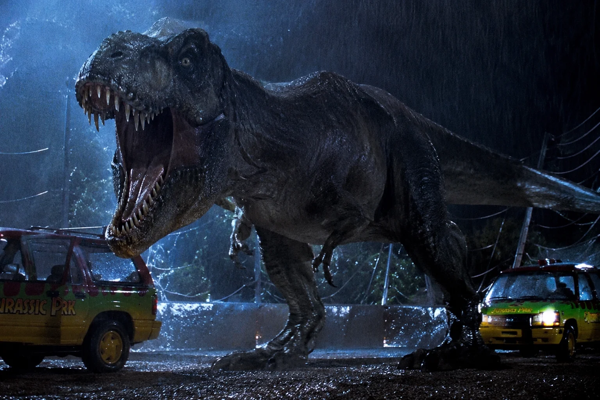
Tyrannosaurus Rex
O dinossauro mais famoso da franquia.

O dinossauro mais famoso da franquia.
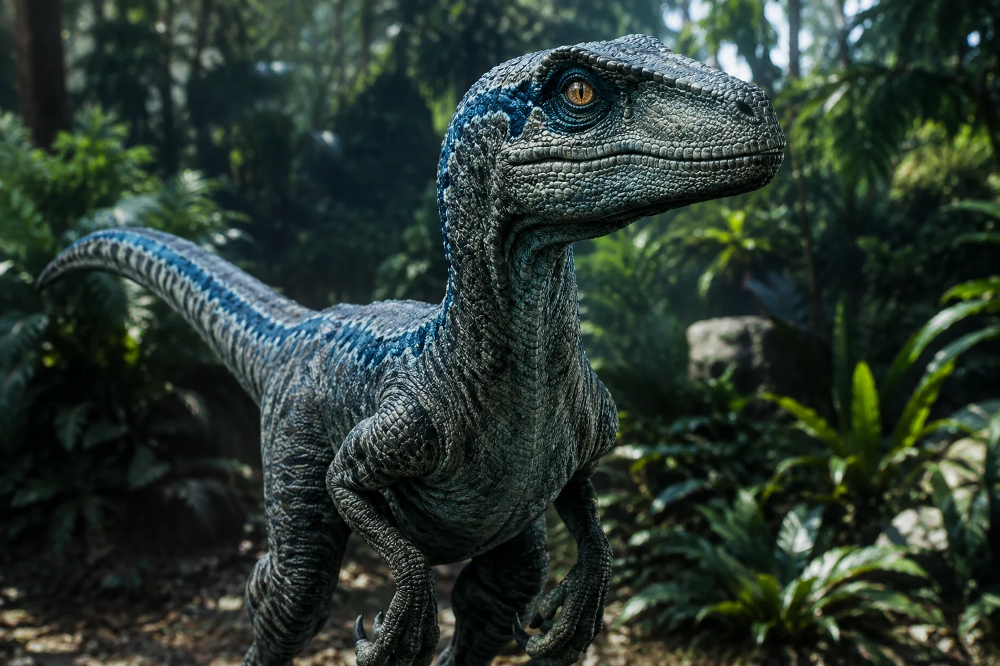
A mais inteligente dos raptores treinados por Owen.
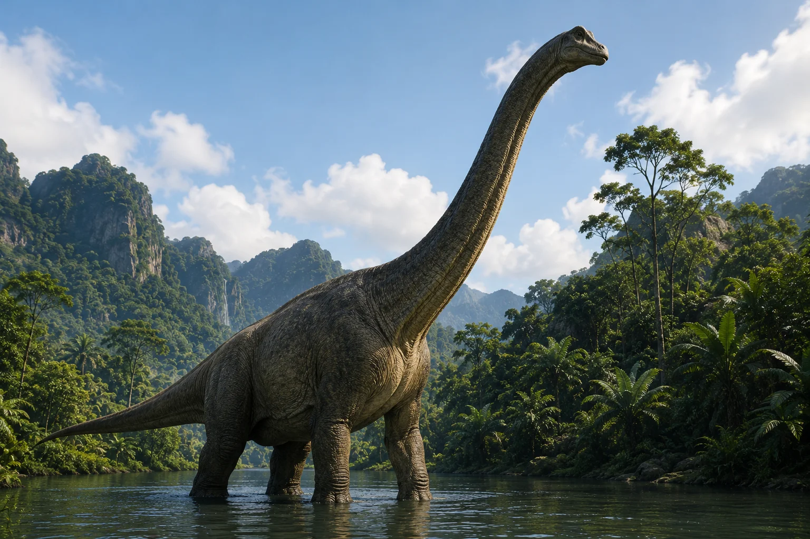
Um dos herbívoros mais icônicos da franquia.
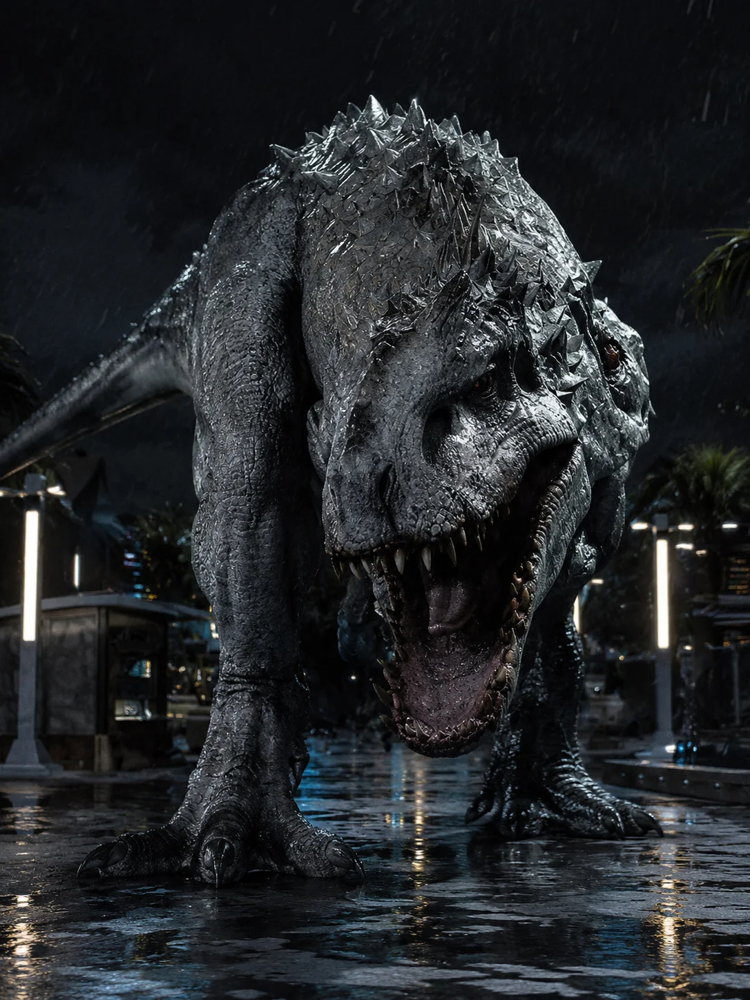
Dinossauro híbrido criado em laboratório.
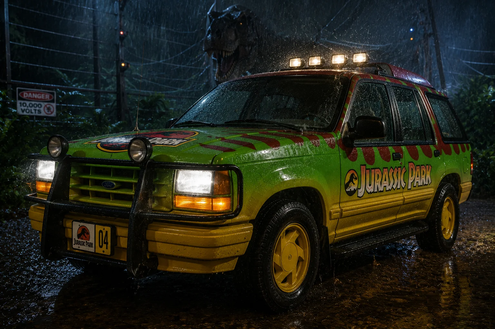
Veículo utilizado no passeio do parque.
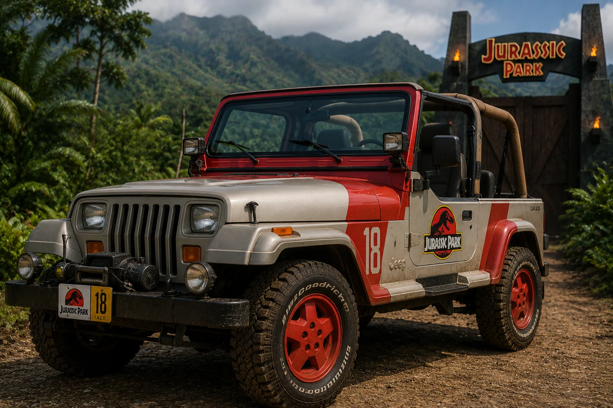
Veículo utilizado para exploração da ilha.
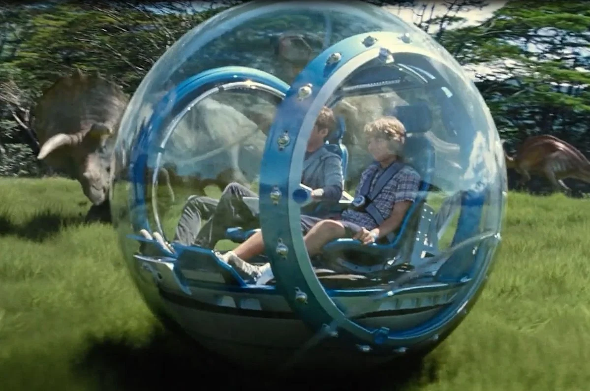
Atração interativa do Jurassic World.
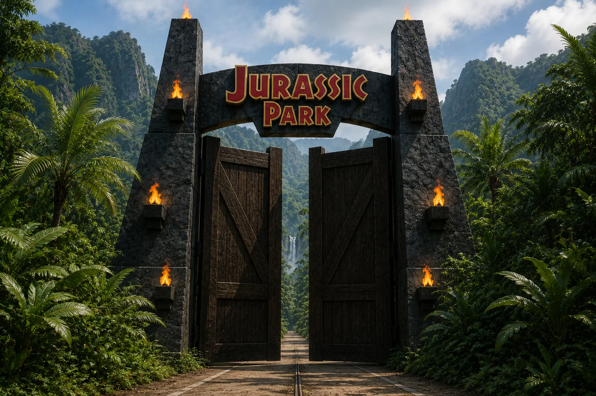
A entrada mais famosa da franquia.
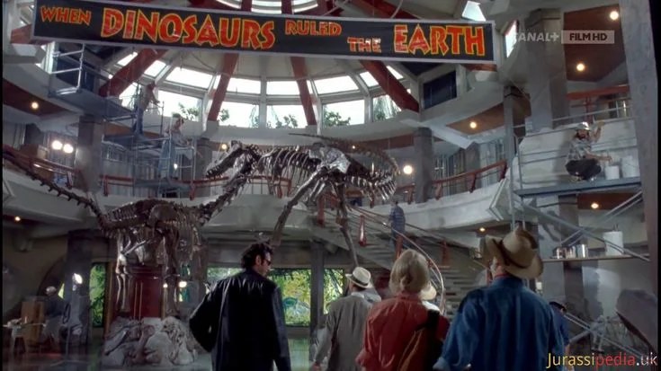
Principal atração do parque original.
Localização do Jurassic Park e Jurassic World.
Criador do Jurassic Park.
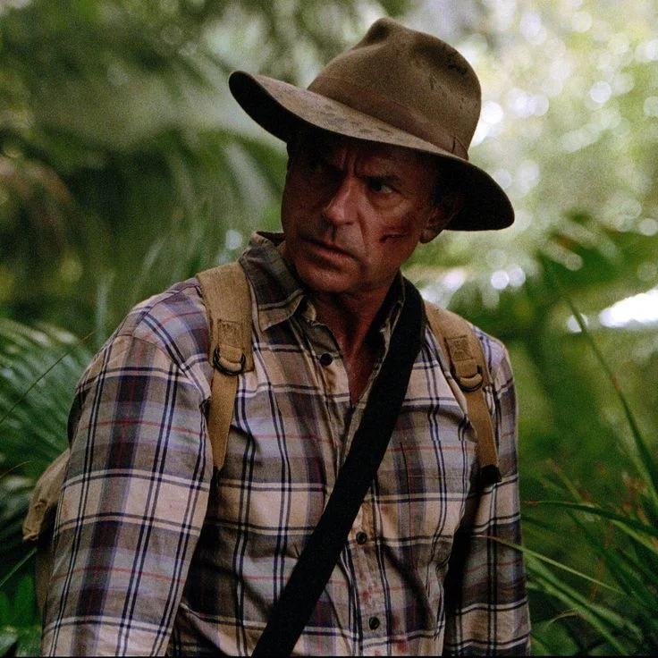
Paleontólogo protagonista de Jurassic Park (1993).
Paleobotânica que ajudou a desvendar os mistérios do Jurassic Park.
Matemático conhecido pela Teoria do Caos.
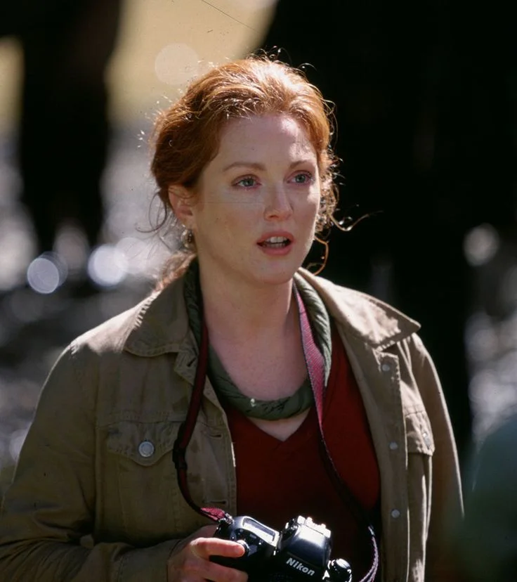
Pesquisadora presente em The Lost World.
Treinador dos velociraptores em Jurassic World.
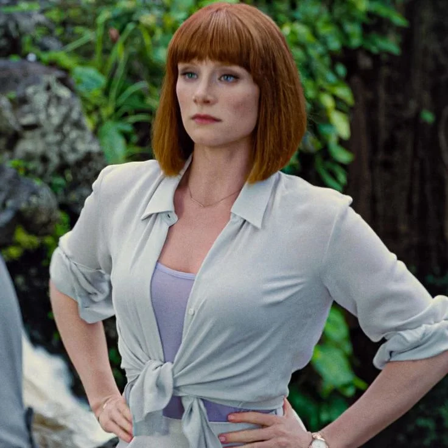
Gerente operacional do Jurassic World.